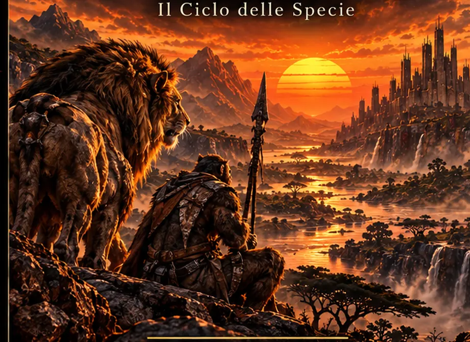

L'AFRICA NON È PIÙ QUELLA DI PRIMA
01 / Il Grande Rimescolamento
QUANDO LA TERRA RICORDÒ.
«Il mondo non finì con il fuoco. Finì con un colore.»
Un asteroide colpisce la depressione di Danakil. La biosfera si risveglia. Specie scomparse tornano a percorrere la Terra, mentre nuovi esseri lottano per sopravvivere fra le rovine.
Dalle mura di Bastione fino alla corsa verso l'Arca, Leon e gli altri dovranno affrontare un mondo fatto di alleanze impossibili e minacce primordiali.
UN ROMANZO DI LORIS NORDIO · DA UN'IDEA DI DIEGO NORDIO